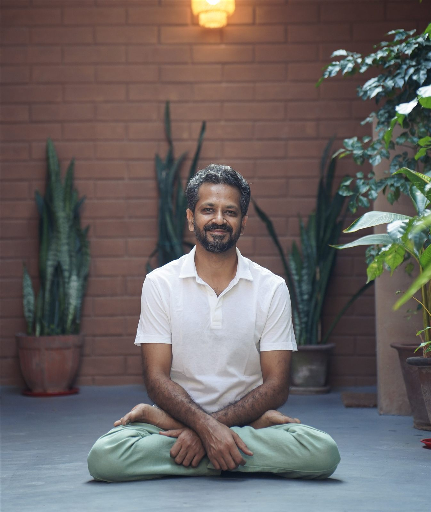

Yoga Nidra · Gokulam, Mysore
Guided rest.
Quiet awareness.
Yoga Nidra with Ankur Bhati at Ritambhara Yoga Shala.
Enquire about Yoga NidraThere are moments when the most useful practice is to lie down, listen and notice. Yoga Nidra offers a guided space for rest and awareness, without a sequence of postures to complete.
Ankur's approach is calm and attentive. Clear verbal guidance helps you follow the practice at your own pace, with room for your own experience.
Ask about upcoming Yoga Nidra sessions in Gokulam, Mysore. Dates, duration, format and fees are confirmed personally before you join.

What to expect
Listen.
Notice. Rest.
Yoga Nidra is usually practised lying down in a comfortable, supported position. You follow a teacher's voice through attention to the body, breath and inner experience. The intention is to rest while remaining aware; there is no need to force concentration.
You may notice ease, restlessness, sleepiness or something else entirely. There is no particular feeling you need to produce. You can adjust your position or pause when needed.
Ankur also teaches Prana Urja, a progressive pranayama course. Breath practice and Yoga Nidra offer different ways of exploring attention: one through learning to work with the breath, the other through guided rest and awareness.
Before joining
A few
questions.
Do I need yoga experience?
No previous experience with asana or meditation is needed. You do not need flexibility or knowledge of a yoga sequence. Ask Ankur about any support you need to rest comfortably.
Is Yoga Nidra the same as sleep?
Yoga Nidra is a guided awareness practice, often described as yogic sleep. The intention is to remain aware while resting. Falling asleep can happen; it is not something to feel you have failed at.
What should I bring?
Wear comfortable clothing. A mat, light blanket and support under the head or knees can help you settle. Confirm what is provided at the venue when arranging your session.
When are the sessions and how do I join?
Contact Ankur for current Yoga Nidra availability, location, format and fees. Sessions are arranged separately from the published Ashtanga and Prana Urja schedules.
Ask about a Yoga Nidra sessionContinue your practice
Breath as a direct
path back to self.
Learn traditional pranayama progressively through Prana Urja, in Mysore or live online.
Explore Prana Urja pranayama classes